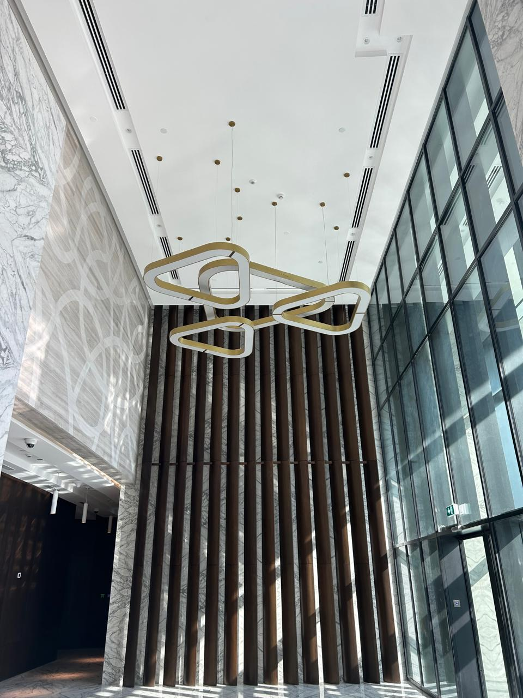

Residential apartments and villas.
Office spaces and commercial buildings.

Company Overview for Ceiling Work Services
Company Name: [White Dolphine Decoration Works LLC]
Business Type: False Ceiling Installation and Interior Solutions
Industry: Construction and Interior Design
Location: [Mussfah Abu Dhabi]
We White Dolphine is a leading provider of false ceiling installation services, specializing in both residential and commercial projects. We offer innovative and aesthetically pleasing ceiling solutions tailored to meet the unique needs of our clients. With a commitment to quality, safety, and customer satisfaction, we have established ourselves as a trusted name in the interior design and construction industry.
Our mission is to deliver superior false ceiling installations that enhance the functionality and beauty of spaces while adhering to the highest standards of quality, safety, and sustainability. We aim to exceed client expectations with exceptional craftsmanship and on-time project completion.
Over the years, we have successfully completed numerous false ceiling installations for a wide variety of projects, including:
Residential apartments and villas.
Office spaces and commercial buildings.
Hotels, restaurants, and retail outlets.
Educational institutions and hospitals.
Custom designs for residential, commercial, and industrial spaces.
Ceiling types include gypsum board, mineral fiber, acoustic, metal, PVC, and wooden panels.
Concealed, exposed grid, and decorative ceiling options.
Integration of lighting systems within false ceilings, including LED lights, recessed lights, and pendant lights.
Smart lighting solutions for energy efficiency and aesthetic appeal.
Noise reduction and soundproofing systems tailored to office spaces, conference rooms, theaters, and studios.
Installation of ceiling grids and suspension systems for stability and ease of access to utilities.
Post-installation maintenance, cleaning, and repair services for damaged or aging false ceilings.
Expert consultation to help clients choose the right materials and designs for their specific needs.
Detailed project planning, including timelines, cost estimation, and budgeting.
We M/s White Dolphine brings years of experience in false ceiling installation, with a skilled team of professionals who understand the intricacies of design, materials, and execution.
We use only the best-quality materials sourced from trusted suppliers, ensuring durability, safety, and aesthetic appeal.
We pride ourselves on completing projects within the specified timeframe, minimizing disruption to your daily activities.
Each project is unique, and we offer personalized ceiling solutions that align with your design vision, functional needs, and budget.
Our team adheres to strict safety protocols and ensures that all installations are compliant with relevant building codes and regulations.
Our focus is on ensuring the satisfaction of our clients through clear communication, high-quality work, and attention to detail.
Our team consists of qualified engineers, designers, and installers, all trained in the latest ceiling installation techniques and safety standards. We also have dedicated project managers who ensure that each project runs smoothly, on time, and within budget.
We follow a strict Quality Assurance and Quality Control (QA/QC) process to ensure that all projects meet the highest standards. Additionally, our commitment to Health, Safety, and Environmental (HSE) policies ensures that every installation is carried out safely and responsibly.
The scope of work for a false ceiling typically includes the following tasks and components:
This scope ensures a detailed and organized approach to installing false ceilings, covering everything from initial design to final handover.
Site Survey: Evaluate the site conditions and take necessary measurements.
Design Approval: Collaborate with the architect or interior designer to finalize the design, including the material selection, ceiling height, lighting, and other features.
Material Specifications: Decide on the materials to be used (e.g., gypsum boards, mineral fiber tiles, metal panels, or PVC).
Ceiling Panels: Selection of panels based on design and functional needs.
Suspension System: This includes tracks, hangers, and accessories to support the ceiling.
Finishing Materials: Paint, textures, or finishes to apply to the ceiling panels.
Additional Fixtures: If required, lights, diffusers, air vents, speakers, and other utilities.
Site Clearing: Ensure the work area is clear of any obstacles and ready for ceiling installation.
Temporary Supports: If necessary, install temporary supports for structural stability.
Framework Installation: Install the metal grid or suspension system (either exposed or concealed) that will hold the ceiling panels.
Ceiling Panel Installation: Attach the ceiling panels to the framework securely.
Electrical Work: Incorporate any lighting fixtures, vents, or other utilities within the false ceiling.
Adjustments: Ensure the ceiling is level and properly aligned.
Jointing and Sealing: Apply joint compound to seams and gaps, and ensure a smooth finish.
Painting/Texture: Apply paint or texture to the surface of the false ceiling, if required.
Clean-Up: Remove any construction debris and clean the work area.
Final Inspection: Ensure all elements are correctly installed and meet design specifications.
Defects Rectification: Address any defects or issues that arise during installation.
Client Handover: Present the completed false ceiling to the client, ensuring satisfaction and functionality.
Maintenance: Provide the client with guidelines for maintaining the false ceiling, including cleaning and periodic checks.
Warranty: Offer a warranty on the installation, materials, and workmanship as per the agreement.
Objective: To ensure that all false ceiling installations meet the highest standards of quality and compliance with design specifications, codes, and client expectations.
Scope:
This policy applies to all stages of false ceiling installation, from design and procurement of materials to installation and final inspection.
Key Quality Standards:
Material Selection: Only certified and approved materials shall be used. These materials must meet industry standards and be verified for quality before installation.
Design Compliance: The ceiling design must be strictly followed. Any modifications must be approved by the project manager and client.
Installation Procedures: Installation shall be performed according to manufacturer guidelines and best practices. All components (e.g., suspension systems, panels) must be installed securely and to the required alignment and finish.
Testing and Inspections: Regular inspections will be conducted at key stages:
Pre-installation of materials.
Mid-installation to check alignment and safety.
Post-installation inspection for finishing, clean lines, and overall quality.
Deficiency Rectification: Any defects or deviations from the design or quality standards identified during inspections must be addressed and rectified promptly before final approval.
Documentation:
Maintain records of material certifications, inspection reports, test results, and any corrective actions taken.
Training:
All personnel involved in the project must undergo training in quality standards, installation techniques, and material handling.
Objective: To monitor and control the quality of materials, workmanship, and finished products throughout the false ceiling installation process.
Quality Control Measures:
Pre-Installation Inspection: Inspect all materials for damage, defects, and conformity with the approved specifications before delivery to the site.
Installation Supervision: Ensure that the installation team follows the correct procedures for ceiling grid setup, panel installation, and alignment. Supervisors should conduct routine checks.
Final Inspection and Approval: After installation, a thorough inspection will be conducted to verify:
Proper fixing of panels and grids.
Seamless finishes with no visible gaps or defects.
Safety features like lighting, ventilation, and fireproofing (if applicable).
Client Sign-Off: Before final handover, obtain client approval that the false ceiling meets their expectations and the agreed specifications.
Corrective Actions: If any issues are detected during the QC process, corrective actions will be taken, including:
Rework or replacement of defective materials.
Re-adjustment of installed components.
Final retesting to ensure compliance.
Objective: To protect the health and safety of all personnel involved in the false ceiling installation process and to minimize the environmental impact of the project.
HSE Responsibilities:
Site Safety: Ensure that the work area is secured and free from hazards. Barricades and warning signs must be placed in areas where work is being performed.
Personal Protective Equipment (PPE): All workers must wear appropriate PPE, including hard hats, gloves, safety boots, eye protection, and hearing protection when necessary.
Equipment Safety: All tools and machinery used for ceiling installation must be in good working condition. Operators must be trained to handle these tools safely.
Material Handling: Materials should be stored and transported in a safe manner to prevent accidents, especially for heavy or fragile components.
Working at Heights: For ceiling installation that requires working at elevated heights, ensure that workers use proper scaffolding, ladders, or lifts. Workers must be trained in fall protection techniques.
Fire Safety: Ensure that fire extinguishers are readily available on-site, especially if flammable materials are being used. Adhere to all fire safety regulations.
Waste Management: Proper disposal of construction debris and packaging material must be carried out. Recycling options should be considered, and materials should be disposed of in an environmentally responsible manner.
Emergency Protocols:
First aid kits must be available on-site, and workers should be trained in basic first aid procedures.
Emergency evacuation procedures must be posted and communicated to all workers.
Environmental Protection:
Minimize dust, noise, and air pollution during the installation.
Ensure the project complies with local environmental regulations, such as waste disposal and energy efficiency standards.
Regulatory Compliance: Ensure the project complies with all local building codes, safety regulations, and environmental standards.
Continuous Improvement: Regularly review QA/QC and HSE policies and procedures. Gather feedback from workers and clients to identify areas for improvement and update the procedures accordingly.
By adhering to this QA/QC and HSE policy, the false ceiling installation process will maintain the highest standards of quality, safety, and environmental responsibility. Ensuring the safety of workers, the satisfaction of clients, and the protection of the environment is a top priority throughout the project.
For a free consultation or to request a quote, please get in touch with us:
At [White Dolphine], we are dedicated to transforming your space with high-quality false ceiling solutions that add elegance, functionality, and safety. Whether it's for aesthetic purposes, acoustic treatment, or creating functional spaces, we are here to bring your vision to life.